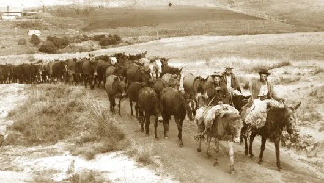
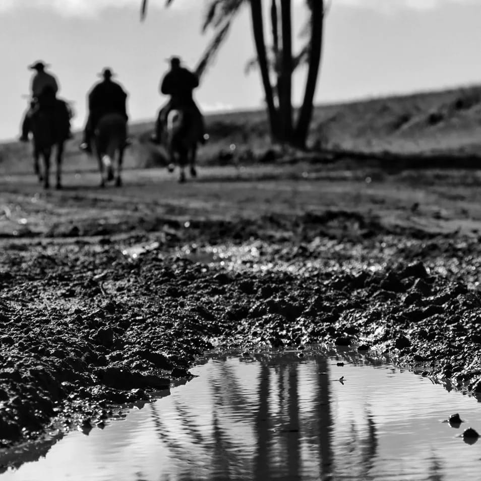
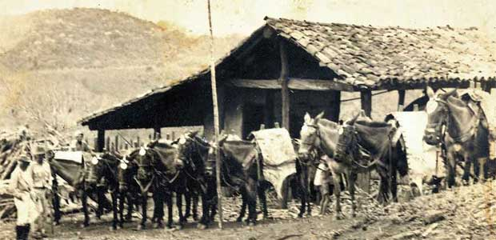

O Segredo do Caminho das Tropas
Nas terras onde os pinheirais parecem tocar o céu e a névoa matinal cobre os campos, esconde-se a memória dos primeiros passos que desenharam o Paraná. Muito antes de as grandes cidades nascerem, o estado era cortado pelo famoso Caminho das Tropas, uma rota estratégica que ligava o Sul ao restante do Brasil. A história se passa no século XVIII, quando um jovem tropeiro chamado Bento recebeu a missão de guiar uma comitiva de tropeiros e suas mulas carregadas de mercadorias pelos trechos mais difíceis do planalto paranaense. A viagem era longa e cheia de desafios: rios violentos para atravessar, tempestades repentinas e a mata densa que parecia não ter fim.

contexto historico
A Corrida do Ouro e a Necessidade de Abastecimento Na virada do século XVII para o XVIII, a descoberta de jazidas de ouro e pedras preciosas na região das Minas Gerais desencadeou um intenso fluxo migratório. Milhares de pessoas moveram-se para o interior do país. Como a região mineradora era focada na extração mineral, não havia produção local suficiente de alimentos nem meios de transporte eficientes para trazer suprimentos do litoral.

importancia cultural
O Caminho das Tropas (ou Estrada dos Tropeiros) foi uma das rotas comerciais mais importantes do Brasil Colonial e do Império, ligando o Sul (Rio Grande do Sul, Santa Catarina e Paraná) ao Sudeste, especialmente Sorocaba (SP) e a região das Minas Gerais. Contexto Histórico e OrigemDurante o século XVIII, a descoberta de ouro e diamantes em Minas Gerais provocou um rápido crescimento populacional e o surgimento de núcleos urbanos. Essa nova população precisava ser abastecida com alimentos (como o charque), couros e, principalmente, animais de carga. Como os terrenos acidentados do interior inviabilizavam o uso de mulas ou cavalos fracos, as mulas e burros (muaes) criados nos pampas gaúchos e na Argentina tornaram-se indispensáveis pela resistência ao transporte de pesadas cargas por longas distâncias.
